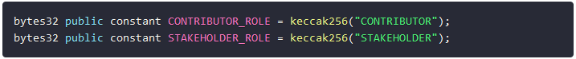
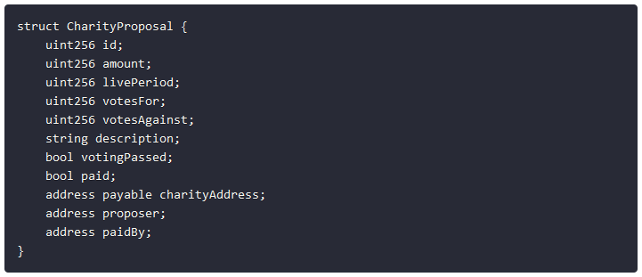
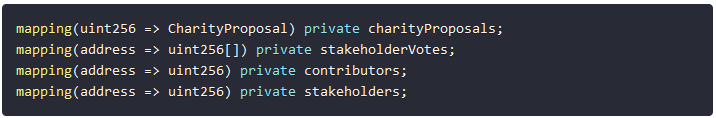
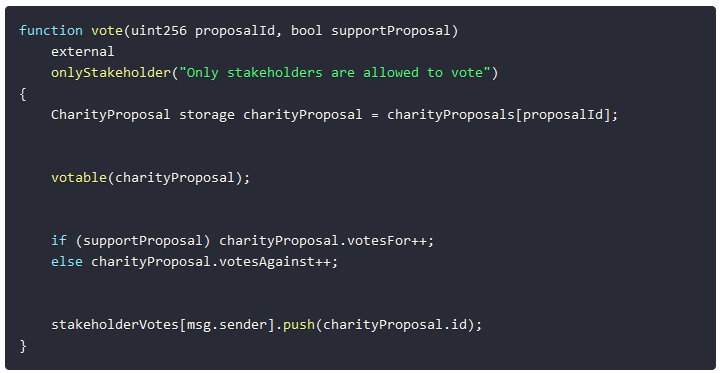

enDAOment.
Fixin' this l8r g8r.
Sticky Story
Overview
Introduction
enDAOment is a platform for decentralized governance that enables communities to self-organize around
shared goals or values, easily and efficiently. It is meant to be a dApp (decentralized application)
that is a universal portal to participate in DAO voting.
This case study was inspired by Vy Alechnavicius’
“UX Ideation Challenge: Blockchain and Web3 Powered Future CX.” A common theme in Web3 projects so
far has been a lack of consideration for human needs and the UX, so the goal of this project was to
identify and design a potential user experience that blockchain technology could revolutionize.
As the sole designer on this project, I executed the design process end-to-end, with a high-fidelity
prototype as the final outcome.
For a more in-depth look at my process, continue scrolling through the full case study. Otherwise,
click here to jump to my solution.
Project Specs
- Project Type: Conceptual Case Study
- Duration: 2 weeks
- Team: Solo 🧍🏾
- Tools: Miro, Figma, Photoshop
- Industries: Web3, Blockchain, Smart Contracts
- Strategies: User Research, UX/UI Design, Branding, Prototyping, Usability Testing
Design Process

I used the Double Diamond approach in the development of enDAOment to design accordingly at each phase of the design process:
- Discover what the actual problem is through user interviews and secondary research.
- Define user needs by filtering through all the information collected during the discovery stage and elaborating on it.
- Develop a solution that meets user needs, get user input and redesign accordingly.
- Deliver a minimum viable prototype (MVP) that offers enough tangibility to find out whether it solves the initial problem.
Discover
What's the issue?
Nonprofits face some serious trust issues: About a third of Americans don’t trust charitable groups
to spend their funds well, and more than 60% of people globally don’t have faith that groups can
accomplish their missions. But groups that perform well may be able to raise more money simply by
becoming more transparent: People like having the opportunity to vet places themselves before making
a contribution.
Source: Fast Company
As trust in nonprofits sinks to new lows, charitable organizations could face many threats to their
ability to carry out their missions, including trouble raising cash, attracting top talent, and
persuading Americans to take action on social, environmental, and other key issues.
Only slightly more than half of Americans trust nonprofits, according to the 2019 Edelman Trust
Barometer, an annual study of institutions around the world. It found that only 52 percent of
Americans have faith that nonprofits will “do what is right.” A recent survey by the Better
Business Bureau brought more bad news: Seventy percent said trust is “essential” before making
a donation, but fewer than 20 percent of Americans said they highly trust charities.
Source: philanthropy.com
So, how can we improve trust between organizations and donors?
User Interviews
I reached out on social media to friends, asking for participants in an interview regarding
their experiences with buying insurance. I gathered 5 participants, all between the ages of
20 and 55, who I interviewed via Zoom and in person. Some noticeable patterns from these
interviews were:
Results:
- Most users have been somewhat skeptical about where charitable donations end up.
- 60% of those interviewed thought that they should have an opinion in how their donations were spent in some organizations.
- Every single user interviewed would appreciate transparency in how donations were spent.
- 60% of users were familiar with the concept of a DAO.
- Every user that was familiar with DAOs thought of them favorably.
OK, so WTF is a DAO?
A decentralized autonomous organization (DAO) is an entity with no central leadership. Decisions
get made from the bottom-up, governed by a community organized around a specific set of rules
enforced on a blockchain.
Being internet-native organizations, DAOs have several advantages over traditional organizations.
One significant advantage of DAOs is the lack of trust needed between two parties. While a traditional
organization requires a lot of trust in the people behind it — especially on behalf of investors — with
DAOs, only the code needs to be trusted.
Trusting that code is easier to do as it’s publicly available and can be extensively tested before
launch. Every action a DAO takes after being launched must be approved by the community and is
completely transparent and verifiable.
Source: Coin Telegraph
TLDR: Web3 and smart contracts allow this entire process to be public and transparent, so everything is in the
hands of the community.
Define
Personas
Based on the user research I set up two personas. I referred to them throughout the entire product development process. Each persona had a scenario that identified a realistic goal the user might have when working with this dApp. The information about each persona focused on its goals and frustrations with interacting with charitable organizations, which drastically affected my design decisions.


Problem Statements
Problems:
- Donors want more financial transparency from organizations.
- Charities and nonprofit organizations would like to promote more transparency.
- DAO’s are relatively new to the general public, and most don’t understand how they work.
Proposed Solutions:
- A platform that makes it simple to see how an organization’s donation are actually being distributed.
- A platform that lets charitable organizations explain their proposals and get feedback from their communities.
- A dApp (decentralized application) that simplifies the process of participating in DAO voting.
How might we create a platform that increases transparency between organizations and their donors using blockchain technology?
Develop
User Flow
The user flow is based on the personas and focuses on the main goal users want to achieve with enDAOment: participating in DAO proposal voting.
Low Fidelity Wireframes
I drew the sketches on blank index cards to build an interactive paper prototype and tested
some user stories with five different individuals. Using paper prototypes enabled me to
examine my ideas before putting everything in the daunting process of digitizing.
After some preliminary testing, the criticism I collected was very positive. I asked users
to talk out loud and explain every decision they made as they navigated the prototype. From
this feedback, I knew I was on the right track. One notable change that I made was replacing
the term “polls” with “proposals” to be more accurate.
Mid Fidelity Wireframes

I turned my revised sketches into a black and white interactive prototype in Figma.
Creating mid-fidelity wireframes helps me focus on the visual consistency and hierarchy
before applying styles. I tested the prototype in-person and remotely.
From my second round of testing, I found out that users were able to navigate through
the dApp successfully, which was very promising. After some feedback from the users, I
decided to make a couple changes to give users more clarity, like new labeled icons and
adding more information to the proposal cards.
Style Guide
After a few more iterations, I designed the final screens with Figma. My aim was a clean, modern look that helps users complete their tasks without difficulty.

Deliver
Final Product
A clickable prototype was created to test my ideas and validate the redesign. It was extremely helpful for me to test users on the tasks that I focused on to gain realistic insights, also understand what worked well and what requires further improvement. The prototype only covers the aspects of tasks that I planned to test users on.
So... How Does It Work?
I have a background in computer engineering, so deciphering smart contracts wasn’t too difficult
for me. While blockchain technology is relatively new, the concepts are pretty simple.
A couple of Solidity functions that would be used if the project were to go beyond being just a
case study:
-

User Types
Users of the DAO will be of two types - Contributors and Stakeholders. We need to declare two constants here, which are the keccak256 hash of the words themselves. These constants will be used later to register and differentiate users. -

CharityProposal struct
The CharityProposal struct definition holds the necessary data that makes up each proposal object. -

Mappings
There are four mappings used:- charityProposals maps a uint256 value and a CharityProposal as key and value respectively. This holds the list of Proposals in the DAO. It uses the id of the Proposal as key and the Proposal itself as the value.
- stakeholderVotes maps the address of a Stakeholder to a list of the Proposals that address has voted on.
- contributors maps the Contributor addresses and the amounts they have sent into the DAO treasury.
- stakeholders maps the addresses and balances of Stakeholders.
-

vote()
The vote() function is an external function that allows voting on proposals when called with the proposal’s id and a second true/false argument depending on whether the vote is in support or against the proposal. -

payCharity function
payCharity handles payment to the specified address after the voting period of the proposal has ended. It takes the proposal as an argument and retrieves that proposal from the mapping. We check whether the charity has already been paid or if the number of supporting votes is less than those against. If either of these conditions are true then the transaction will be reverted with an error message. If not, the paid property of the proposal is set true, the address of the stakeholder making the payment is set, and finally emit the PaymentTransfered event for logging purposes and transfer the payment to the charity address.
Final User Testing
To validate my proposed solutions, I asked five users to perform the following set of tasks using the prototype using the minimum number of clicks:
- Find the number of unique participants in the first proposal. (5/5 completed successfully)
- Vote yes on a proposal. (5/5 completed successfully)
- Find the preferences page. (4/5 completed successfully)
- Check the comments on a proposal. (5/5 completed successfully)
- Tell me how many DAO proposals the user has participated in. (5/5 completed successfully)
In the end, all users managed to successfully complete four out of the five tasks. One user had some difficulty with the third task because they were looking for a settings icon, but once I referred to it as the “user preferences” page, they knew how to find it easier.
Reflections
Lessons Learned
This project was a great experience for me to not only improve my design skills, but also
to develop my skills introducing blockchain technologies to the general population. Here
were some of my takeaways:
Keep it simple, stupid
Web3 is daunting concept for most users, but it is essentially a new way to accomplish the
same tasks. My goal was to only use “techy” jargon only when absolutely necessary to make
the transition from using web2 applications to web3 dApps as seamless as possible.
Jakob’s Law
According to Jakob’s Law, users spend most of their time on other sites and would prefer
to use products that work the same way as the sites they already know. Thus, I
designed enDAOment to look and feel like a basic voting app, even though its completely
blockchain-based.
Final Thoughts
Overall, web3 is (most likely) the future, but the high barrier of entry (extensive
knowledge about blockchain lingo is practically required) is slowing down its inevitable
takeover of the internet. But, I believe that slowly (and painlessly) integrating blockchain
technologies into the general population’s everyday lives is path forward. While decentralized
autonomous organizations (DAOs) initially seem convoluted and complicated, I feel like enDAOment
is a great first step into the world of smart contracts.
If you want to know more about this case study, feel free to reach out to me at hi@jstfleur.com
if you'd like to chat about it!